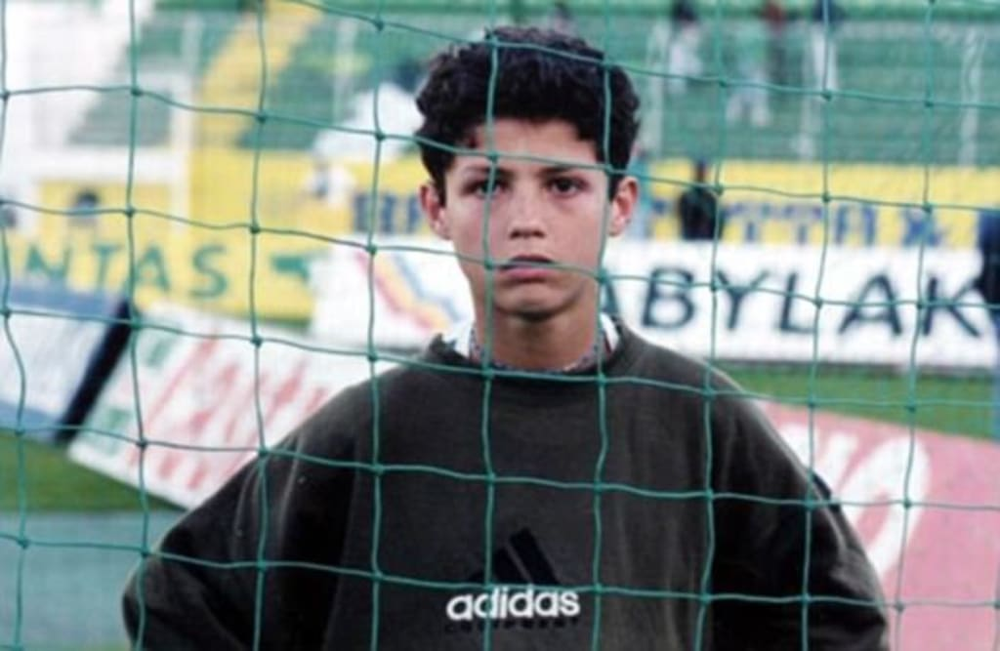
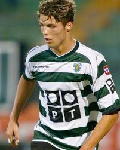

Early Life
From Madeira to the world stage.
Born in Madeira
Cristiano Ronaldo was born on February 5, 1985 in Funchal, Madeira, Portugal. He was the youngest of four children.
His family was poor. His father worked as a gardener. His mother worked as a cook. They lived in a very small house.
Even as a young boy, Ronaldo loved football. He played every day in the streets of Madeira.
Ronaldo left Madeira at age 12 to join the Sporting CP academy in Lisbon — alone.
Early Career Fact

Youth Football

Ronaldo started playing for Andorinha at age 7. Then he moved to Nacional. At age 12, he joined the academy of Sporting CP in Lisbon.
His Youth Clubs
- Andorinha — age 7 to 10
- His first ever club
- His father worked there
- Nacional — age 10 to 12
- Sporting CP Academy — age 12 to 18
Top 3 Youth Moments
- Scored many goals at Andorinha
- Passed the Sporting CP trial at age 12
- Made his first team debut at age 17
First Pro Game
In 2003, Ronaldo played his first professional game for Sporting CP. He was only 17 years old. He was so good that Manchester United wanted to sign him right away.
He signed for Manchester United for £12 million — a record fee for a teenager at that time.
| Ronaldo's Youth Career | ||
|---|---|---|
| Andorinha | 1992–1995 | Age 7–10 |
| Nacional | 1995–1997 | Age 10–12 |
| Sporting CP | 1997–2003 | Age 12–18 |